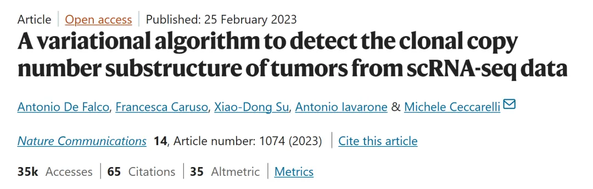
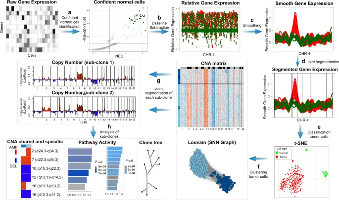
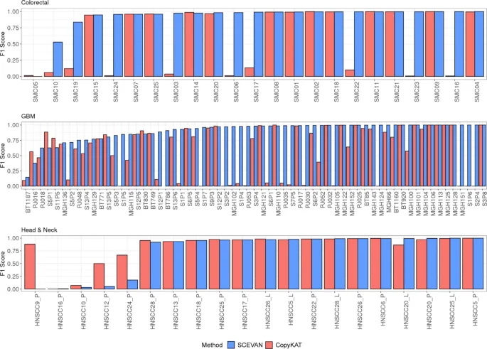
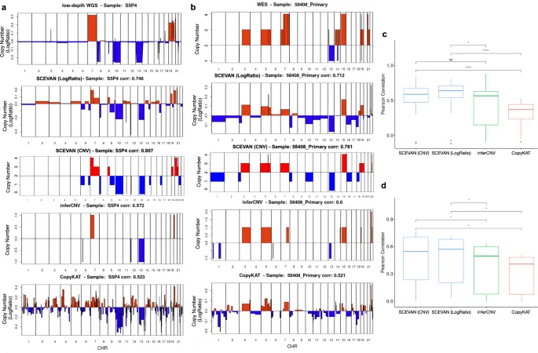
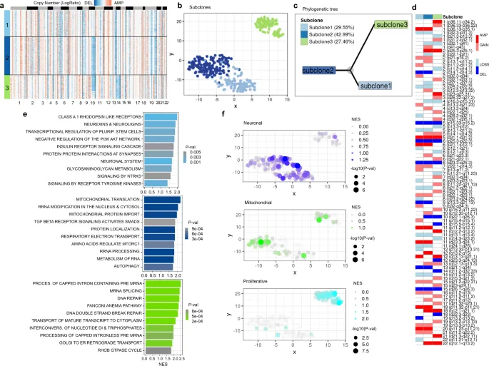
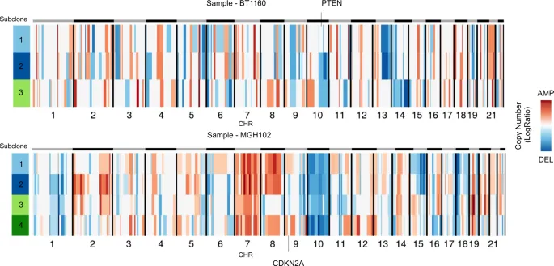
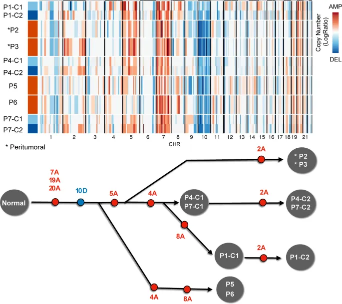
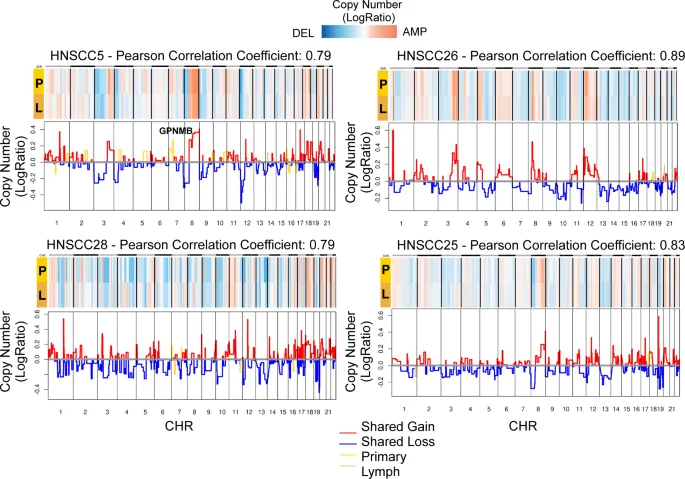

《NC》| SCEVAN:从scRNA-seq中检测肿瘤克隆拷贝数亚结构
原文：https://mp.weixin.qq.com/s?__biz=MzAwMzIzOTk5OQ==&mid=2247530573&idx=1&sn=2212439dd6d5bda973f4c5485cdc30f8&chksm=9b3c011dac4b880bf0dd04e309ddebfddcc54986c1284e22bf9387580c63bc120c8b14a106b4#rd 合集：文献速递
一、写在前面
本次分享的是2023年发布于《Nature Communications》的文章（IF：14.7）“A variational algorithm to detect the clonal copy number substructure of tumors from scRNA-seq data” DOI: 10.1038/s41467-023-36790-9链接：https://pubmed.ncbi.nlm.nih.gov/36841879/

肿瘤内部异质性是理解肿瘤进展和治疗失败的关键 ，尤其是在揭示肿瘤细胞与免疫微环境相互作用的复杂性方面。单细胞 RNA 测序（scRNA-seq）技术以其高分辨率，为解析肿瘤亚克隆结构和细胞状态提供了强大工具 。然而，如何从 scRNA-seq 数据中准确推断肿瘤的克隆拷贝数变异仍是一大挑战 。本文介绍了一种创新的变分算法 SCEVAN ，通过多通道分割算法，利用肿瘤细胞共享断点假设，快速解析肿瘤的亚克隆拷贝数结构。SCEVAN 不仅能有效区分恶性和非恶性细胞，还能揭示肿瘤的区域性与时间性演化特征 。本研究通过对多种肿瘤类型和技术的 106 个样本、93,322 个细胞的分析，展示了 SCEVAN 在肿瘤异质性研究中的广泛适用性，为精准诊断和治疗靶点开发提供了新视角 。 如果需要数据分析指导 、生信热点全文复现 、自测/数据库数据个性化分析 辅导、常态化实验学习，欢迎联系客服微信[Biomamba_zhushou]
**二、主要结果 **
1. SCEVAN工作流程
SCEVAN算法，是一个旨在从原始scRNA-seq数据中自动解析肿瘤克隆亚结构的“端到端”计算管道（图 1）。 整个流程始于输入的原始基因表达计数矩阵。 在对低质量细胞和基因进行初步过滤后，算法首先会自动识别出一小部分可信度高的非恶性细胞，并将它们的表达谱作为基准，计算出所有细胞相对于这个正常基线的基因表达差异矩阵。 为了在降噪的同时保留真实的拷贝数变化边界，该差异矩阵会经过一个边缘保留非线性扩散滤波器（edge-preserving nonlinear diffusion filter） 进行平滑处理。
处理后的平滑矩阵是后续分析的核心。 SCEVAN会采用其关键创新——一个源于计算机视觉领域的联合分割算法（joint segmentation algorithm） ——对所有细胞的表达谱进行同步分割。 该算法基于一个核心假设：同一克隆内的所有细胞共享相同的拷贝数断点，因此可以整合所有细胞的信号来更准确地识别这些断点。 分割完成后，算法会自动将所有细胞分为恶性与非恶性两大类，其依据是包含初始可信正常细胞最多的细胞簇被定义为非恶性群体。 随后，仅针对恶性细胞群体，SCEVAN会进一步通过聚类来识别不同的亚克隆。 每个亚克隆的拷贝数谱会再经过一次独立的精细分割，最终将各基因组区域划分为“缺失”、“丢失”、“中性”、“增加”或“扩增”五种拷贝数状态。流程的最后，SCEVAN会进行全面的下游分析，包括区分主干、共享和克隆特异性的拷贝数变异 ，并构建克隆演化树 ，从而完整地描绘出肿瘤的克隆结构和演化关系。

图1
2. 合成数据上进行恶性细胞分类
研究团队希望在可控的条件下定量评估SCEVAN算法的准确性，于是他们在模拟数据（synthetic data） 上进行了一系列严格的基准测试。利用scDesign2 工具，一个基于真实的多发性骨髓瘤数据集，生成了500个 具有已知细胞身份的模拟scRNA-seq数据集。这些数据集被设计用来模拟真实的肿瘤样本，包含了不同的肿瘤纯度和细胞组成，并且为了进一步增加挑战性，研究者还使用SPLATTER 工具向数据中人为添加了三种不同水平的dropout噪声 。在对这总计超过32万个模拟细胞的测试中，SCEVAN的表现全面优于当前先进的CopyKAT 算法。研究人员使用F1分数（F1 score） 作为准确性的衡量标准，结果显示SCEVAN在所有噪声水平下都取得了显著更高的分数。例如，在无额外噪声的情况下，SCEVAN的F1分数为0.948，而CopyKAT为0.798；在最高噪声水平下，SCEVAN的F1分数仍有0.824，而CopyKAT则降至0.726。这一系列在模拟数据上的测试结果，有力地证明了SCEVAN在自动识别恶性细胞方面具有卓越的准确性和鲁棒性。
3. 真实数据中的恶性细胞分类性能验证
作者将SCEVAN和CopyKAT应用到了一个包含106个真实肿瘤样本 的大型公开数据集中进行现实场景验证。这些样本覆盖了胶质母细胞瘤（GBM）、头颈癌（HNSCC）和结直肠癌 三种不同的癌症类型和多种测序技术，总细胞数超过93,000个 。在此次测试中，作者以原始研究中经过专家手动注释的细胞身份作为“金标准”，来评判两种自动化算法的准确性。结果再次显示了SCEVAN的优越性（图 2）：它在63%的样本 中取得了比CopyKAT更高的分类分数，而CopyKAT仅在23%的样本中占优。从总体性能上看，SCEVAN在所有样本中的总平均F1分数达到了0.90 ，远高于CopyKAT的0.63。作者也指出，在肿瘤细胞数量极少（1-15个）的样本中，SCEVAN的准确性会有所下降，但这一系列在多样化真实数据集上的测试结果，仍旧有力地证明了SCEVAN能够准确地从scRNA-seq数据中区分肿瘤细胞和正常细胞。

图2
4. 合成数据中的拷贝数断点分割性能验证
在证明其卓越的细胞分类能力后，作者进一步对SCEVAN的核心技术——变分联合分割算法（variational joint segmentation algorithm） ——在识别拷贝数变异（CNV）断点上的准确性进行了深入验证。研究团队在模拟数据（synthetic data） 上进行了测试以便于进行可控的定量评估，他们构建了包含克隆性和亚克隆性拷贝数变异的复杂数据集，其中变异的位置和强度都是已知的。在与CopyKAT及其他分割算法（如GFLars）的直接比较中，SCEVAN在所有测试场景下都展现出显著更高的准确性 。无论是在F1分数还是在精确率-召回率曲线下面积（AUC）这两个关键指标上，SCEVAN的表现都全面胜出，这表明其联合分割策略能更有效地从嘈杂的单细胞表达数据中识别出真实的拷贝数边界。
5. 参考数据的分割准确性验证
那么如何在真实世界数据中验证其核心分割算法的准确性？作者使用了一批同时拥有scRNA-seq数据和作为“金标准”的群体DNA测序（WGS或WES）数据的肿瘤样本。通过比较各种算法从scRNA-seq中推断出的CNV谱与DNA测序得到的真实CNV谱之间的皮尔逊相关性（Pearson correlation） ，来评估算法的准确性。结果再次证实了SCEVAN的优越性（图 3）：在胶质母细胞瘤（GBM）和多发性骨髓瘤（MM）两个数据集中，SCEVAN推断出的CNV谱与“金标准”的相关性均显著高于 inferCNV和CopyKAT。例如，在GBM数据集中，SCEVAN的平均相关性为0.57，而inferCNV为0.44，CopyKAT仅为-0.03。此外，作者还通过一系列对照实验证明，SCEVAN的这种优势主要来源于其更优秀的分割算法，而非仅仅是细胞分类的准确性。并且，该算法对于参考正常细胞的轻微错误分类表现出高度的鲁棒性（robustness） ，这在处理复杂的真实世界样本时是一个巨大的优势。

图3
6. 计算效率评估
除了准确性，计算效率也是衡量一个算法实用性的关键指标，尤其是在处理日益庞大的单细胞数据集时。研究团队对SCEVAN算法的运行速度进行了评估，并与CopyKAT和inferCNV进行了比较。他们指出，SCEVAN之所以高效，关键在于其核心的分割步骤采用了一种贪心区域增长算法（greedy region-growing algorithm） 。在对算法不同阶段的计时测试中，SCEVAN在初始的恶性细胞分类步骤中，速度是竞争对手的2至7倍 。在更为耗时的分割步骤中，SCEVAN的优势更为显著：在一个胶质母细胞瘤（GBM）数据集上，它比CopyKAT快2倍，比inferCNV快5倍。特别是在处理细胞数量庞大的10x Genomics数据集（如多发性骨髓瘤样本）时，SCEVAN的效率优势被进一步放大，其速度分别比inferCNV和CopyKAT快了11倍和19倍 。这些结果有力地证明，SCEVAN不仅在精度上超越了同类工具，在计算效率上也表现卓越，使其特别适合应用于当前的大规模单细胞数据分析。
7. 胶质母细胞瘤中的应用：揭示肿瘤内部的克隆异质性
作者将其应用于分析胶质母细胞瘤（Glioblastoma, GBM） 这一具有高度瘤内异质性（intratumoral heterogeneity） 的恶性脑瘤，以便于展示SCEVAN在真实生物学问题中的应用价值。在一个名为MGH105的样本中，SCEVAN成功地从scRNA-seq数据中识别出了四个亚克隆（four subclones） ，而这些亚克隆是标准scRNA-seq分析流程无法分辨的，其存在此前仅通过单细胞DNA甲基化这一更直接的基因组学技术才得以证实，这突显了SCEVAN算法的超高分辨率。在另一个名为BT1160的样本中，SCEVAN不仅识别出三个亚克隆 并构建了它们的演化树（phylogenetic tree） （图 4），更重要的是，它还将这种由拷贝数变异（CNA）定义的遗传异质性与功能异质性关联了起来：分析显示，这三个亚克隆分别对应了GBM的不同代谢亚型（神经元型、线粒体型和增殖/祖细胞型 ）。此外，通过对增殖型亚克隆特有的基因扩增区域进行分析，算法还锁定了一个潜在的驱动基因UBE2T 。最后，分析也揭示了关键抑癌基因（如PTEN 和CDKN2A ）的缺失可以是亚克隆事件（subclonal events） ，即只存在于部分而非全部的肿瘤细胞中（图 5）。这些应用实例充分证明，SCEVAN不仅能精确地识别肿瘤亚克隆，还能将遗传结构与细胞功能状态联系起来，从而从scRNA-seq数据中发掘出具有重要生物学和临床意义的见解。

图4

图5
8. 多区域胶质母细胞瘤的克隆演化
作者还将其应用于一个多区域（multiregional） 胶质母细胞瘤（GBM）样本的分析中，这样可以进一步展示SCEVAN在解析复杂肿瘤生物学问题上的能力。由于单个肿瘤活检可能无法完全代表整个肿瘤的异质性，因此对来自同一肿瘤不同空间位置的样本进行分析，这对于理解肿瘤演化（tumor evolution） 至关重要。在本文中，作者分析了一位患者的七个活检样本，其中两个来自肿瘤外周（tumor periphery） ，五个来自肿瘤核心（tumor core） 。通过对每个活检样本进行独立的克隆分析，SCEVAN成功地重构了该肿瘤内部复杂的空间克隆结构，并推断出了一个演化树（evolutionary tree） （图 6）。该演化树清晰地显示，来自肿瘤外周的克隆形成了一个独立的演化分支，它们缺少存在于核心区域克隆中的4号和8号染色体扩增。此外，一个位于2号染色体上的扩增事件在外周区域是克隆性的（所有肿瘤细胞都存在），但在部分核心区域则转变为亚克隆性的（仅部分肿瘤细胞存在），这揭示了肿瘤在空间扩张过程中的动态演化过程。这一应用实例表明，SCEVAN能够有效整合多区域scRNA-seq数据，从而描绘出肿瘤的地理克隆图谱并推断其演化路径。

图6
9. 原发灶与转移淋巴结的克隆结构
作者利用该算法比较了头颈癌（HNSCC） 患者的原发肿瘤（primary tumor） 与其对应的淋巴结转移灶（lymph node metastasis） 之间的克隆结构关系。 在分析的多个病例中，大部分情况下转移灶的克隆结构与原发灶高度相似，显示出很高的相关性，这表明转移细胞直接来源于原发灶的主要克隆。 然而，在一个名为HNSCC5的特定病例中，SCEVAN揭示了一个重要的演化差异：原发灶中存在一个7号染色体的扩增，而这个扩增在淋巴结转移灶中却消失了（图 7）。 进一步分析发现，这个区域包含一个名为 GPNMB 的关键基因，该基因在转移灶中也相应地表现出下调。 作者指出， GPNMB 在其他癌症中通常与促进肿瘤生长和转移有关，因此它在转移过程中的丢失可能是一个值得深入研究的演化事件。 这个案例充分说明，SCEVAN可以被用来精确比较原发灶和转移灶的克隆差异，从而为研究肿瘤转移过程中的克隆演化和筛选过程提供有力的工具。

图7
三、最后聊聊
综上所述，SCEVAN算法通过变分方法成功从 scRNA-seq 数据中解卷肿瘤克隆子结构，准确区分恶性细胞，并揭示了肿瘤异质性、克隆演化和微环境交互的关键机制。在脑肿瘤应用中，它识别了如 UBE2T 等潜在治疗靶点，并阐明了 PTEN 和 CDKN2A 等抑癌基因的克隆状态，为合成致死策略提供了启示。然而，该算法的局限在于依赖非整倍体假设，不适合如白血病或儿童癌症等基因组变异较少的肿瘤类型。未来研究可扩展到更多技术平台和数据集，结合多组学整合，进一步验证其在临床转化中的鲁棒性。总体而言，SCEVAN为肿瘤异质性研究注入了新活力，有望推动精准医学的进步。

如何联系我们

 留一个领取资料、开箱即用的单细胞分析镜像的微信号[Biomamba_zhushou]，方便各位随时交流。同时我们也构建了交流群矩阵，欢迎大家入群讨论。
大家可以阅读完这几篇之后添加给生信入门初学者的小贴士
没有检索，就没有发言权
留一个领取资料、开箱即用的单细胞分析镜像的微信号[Biomamba_zhushou]，方便各位随时交流。同时我们也构建了交流群矩阵，欢迎大家入群讨论。
大家可以阅读完这几篇之后添加给生信入门初学者的小贴士
没有检索，就没有发言权
已有生信基地联系方式的同学无需重复添加

 您点的每个赞和在看，我都认真当成了喜欢
您点的每个赞和在看，我都认真当成了喜欢